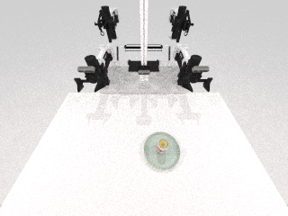

功能进度
已经做到哪一步
“完成”只表示有实现、测试和可核查证据；只有研究设计或工作区代码的项目不会被算成完成。
基本成形90%
真实 compile + 资产入库
自然语言可以走进真实编译器；缺资产时生成并写入 v3 ledger，后续运行会复用同一资产。三次独立进程均成功并可恢复。
查看 compile 证据 →
进行中65%
资产与证据完整性
新写入入口已按完整文件闭包严格检查；但旧的 162 份 ledger 全部仍有数据债，共发现 4,082 条缺口，不能批量“猜着修”。
查看完整性审计 →
候选竖切65%
可播放、可验证 replay
隔离执行、事件协议、资产快照和真实媒体解码已经接通。生产资格生成器正在工作区开发，但还没有当前版本的 900/120 正式资格回放。
查看 replay 边界 →
候选闭环55%
LLM / System 2 中枢
受信世界状态、上下文、规划收据、ToolResult、状态增量和 compile dispatcher 已实现。本地 Qwen 能给出合法调用，但尚未带真实 catalog 跑完整生产 compile。
查看 Qwen 实跑 →
实验待跑20%
VLM 校正与 prompt fallback
样本、模型身份、指标和停止规则已预注册，实验 runner 正在工作区开发。日志明确记录：正式 VLM 推理尚未开始，因此还不能声称有量化提升。
查看预注册方案 →
尚未实现10%
事件强绑定前端工作台
后端已经有可续传 RunEvent 和审计日志，但当前 74 个目标提交里没有 dashboard、拖拽操作台、依赖板或实时回调消费前端。
查看平台边界 →
当前全仓红灯55%
测试、文档与逐功能审计
已有大量攻击测试、模块级覆盖率门禁和逐次实施日志；但本次 pytest -q 是 1,802 通过、95 失败、18 跳过，当前快照不能称为全绿。
查看实施主账 →
当前主路径
一条请求现在如何流动
01自然语言输入受限、可审计
→
02compile真实核心编译器
→
03资产复用 / 生成CAS + ledger
→
04replay候选生产路径
→
05validate / 晋升v2 尚未实现
关键点：系统会在证据不足时停住，而不是把静态渲染、短回放或测试替身冒充为物理通过。
真实资产佐证
能播放，也能解释边界
下面是仓库已保存的 can-on-plate 900-step / 120-frame 历史真实回放。它证明物理回放基础可用，但不替代当前候选 replay Skill 的正式资格化。

compile 事件
三次独立进程，每次 18 条真实阶段事件；首轮生成资产，后两轮复用。
媒体可验证
历史 MP4 完整解码为 120 帧，其中 114 帧互异，不只检查扩展名。
旧 ledger 有债
收紧契约后全部旧账本都有缺口；这也是当前最明确的数据修复工作量。
Qwen 规划成功
10 次提示迭代中 2 次得到合法 typed decision；尚未执行真实生产 compile。
剩余关键路径
下一阶段先做什么
不是继续堆功能，而是把现有候选能力逐个过真实门禁。
先拿下 production replay
完成固定 qualification bundle，并让当前 handler 真实跑通 900 settle / 120 contact / 120 frames，再由独立 validate 复核。
打通 System 2 → 真实 compile
刷新漂移后的 compile qualification，用真实非空 catalog 执行规划、Registry、compile、可信回执和状态增量。
执行 VLM A/B，而不是只写协议
冻结 prompt 后跑 dev/test，报告 macro F1、unsafe pass、fallback 准确率、成本和失败尝试。
实现事件驱动工作台
消费真实 RunEvent，补 dashboard、拖拽操作、资产/回放/验证视图、依赖板和源码链接。
清理旧资产数据债
只迁移能由已有 bytes 或可信 receipt 证明的字段；缺 stable pose / settle 的资产进入实测队列。
审计说明
这份快照没有声称什么
- 没有声称已部署真机能力。
- 没有把 2-step smoke 当成长期物理通过。
- 没有把 VLM 预注册当成性能提升结果。
- 没有把未提交工作区代码当成稳定 feature。
- Dashboard 三个约定入口返回 404，本页以当前分支和仓库证据为准。
会后查证